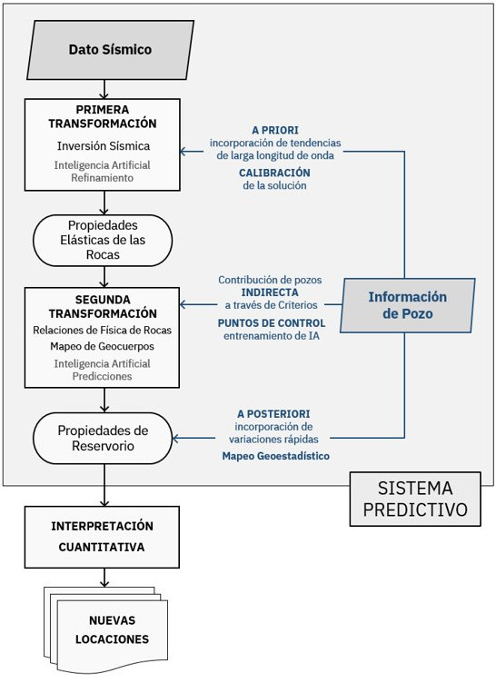

JT Geophysics
Predictive System & Quantitative Interpretation
A workflow based on seismic information assisted by wells intended to predict the subsurface distribution of those properties that best describe the behavior of the reservoir when set in production. The output of the system, provided that a good interpretation procedure is applied, must lead to maximize the chances of drilling success.
There is not a unique workflow, it is designed for each case according to the objectives and the available information instead. Anyway, some common elements can be distinguished: